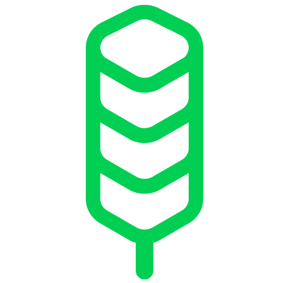

<nav class="navbar navbar-expand-lg sticky-top">
    <a class="navbar-brand" href="#">
      
      <span class="texto-logo">FOREST</span>      
    </a>
  

  
    <!-- Menu para telas maiores (desktop) -->
    <div class="navbar-nav ms-auto" *ngIf="isDesktopView">
      <button class="navbar-perfil-btn" (click)="calendarioAirbnb()"><i class="fas fa-home"></i> Calendário</button>
      <button class="navbar-perfil-btn" (click)="cadastroPredio()"><i class="fas fa-gear"></i> Predios</button>
      <button class="navbar-perfil-btn" (click)="cadastroApartamento()"><i class="fas fa-gear"></i> Apartamentos</button>
      <button class="navbar-perfil-btn" (click)="cadastroUsuario()"><i class="fas fa-gear"></i> Usuarios</button>
      <button class="navbar-perfil-btn" (click)="profile()"><i class="fas fa-user"></i> Perfil</button>
      <button class="navbar-logout-btn" (click)="logout()"><i class="fas fa-sign-out-alt"></i> Sair</button>
    </div>
  
    <!-- Menu para telas menores (menu sanduíche) -->
    <div class="menu-wrapper">
      <button class="navbar-toggler" type="button" (click)="toggleMenu()">
        <span class="navbar-toggler-icon"></span>
      </button>
  
      <!-- Menu de sanduíche com todas as funções -->
      <div class="navbar-menu" *ngIf="isMenuOpen && !isDesktopView">
        <button class="navbar-perfil-btn" (click)="calendarioAirbnb()"><i class="fas fa-home"></i> Calendário</button>

        <button class="navbar-perfil-btn" (click)="profile()"><i class="fas fa-user"></i> Perfil</button>
        <button class="navbar-logout-btn" (click)="logout()"><i class="fas fa-sign-out-alt"></i> Sair</button>
      </div>
    </div>
  </nav>
  